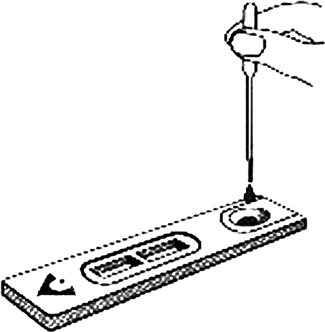

Advanced Quality™ One step myoglobin/ck-mb/troponin I test 
(Sangre total, suero o plasma)
DESCRIPCIÓN: Prueba rápida para la determinación cualitativa de mioglobina cardiaca/CK-MB/troponina I en sangre total, suero o plasma.
PRINCIPIO: Es un ensayo de inmunocromatografía basado en una prueba in vitro de un solo paso. Está diseñado para la determinación de mioglobina cardiaca/CK-MB/troponina I en sangre total, suero o plasma; asimismo, es útil en el diagnóstico de infarto de miocardio.
FORMATO: Cassette.
MUESTRA: Suero, plasma o sangre total.
PROCEDIMIENTO:

INTERPRETACIÓN:

TIEMPO DE RESULTADOS: 3 a 10 minutos.
PRESENTACIÓN: 10 pruebas.
CADUCIDAD: 18 meses.
Registro: 1498R2011 SSA
DATOS COMPLEMENTARIOS: Para mayores informes comunicarse a:
ACCUTRACK, S.A. DE C.V.
Teléfonos: (55) 5524-4481, 5524-2644, 5524-4575
e-mail: ventas@accutrack.com.mx
www.accutrack.com.mx